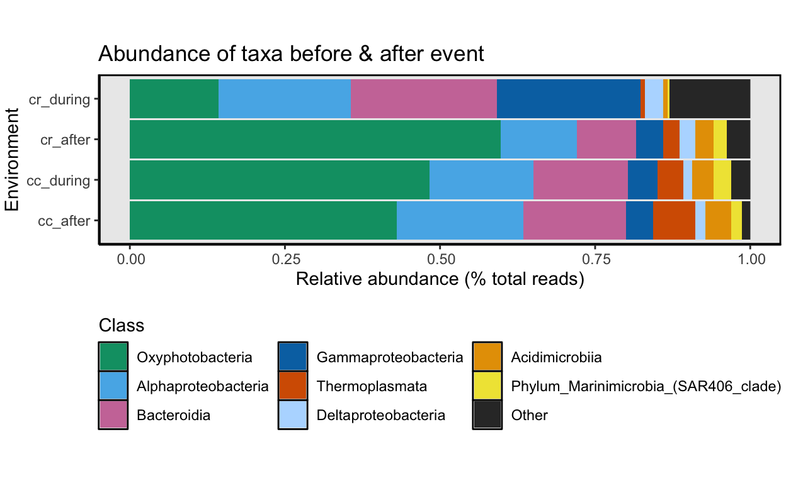

Table of Contents
Summary of Water Samples
Now that we have a phyloseq object containing the water samples only, we can summarize the data in the water phyloseq object. Again, we use the summarize_phyloseq from the microbiome R package(Lahti, Sudarshan, and others 2017) as we did before.
First, load the R objects that contain the sample data, sequence table, and taxonomy table (saved at the end of the previous section) and merge them into a single phyloseq object. Doing it this way keeps the memory footprint low.
remove(list = ls())
sample_d <- readRDS("rdata/16s-water/ps_water-sample.rds")
seqtab <- readRDS("rdata/16s-water/ps_water-seqtab.rds")
taxtab <- readRDS("rdata/16s-water/ps_water-taxtab.rds")
ps_water <- merge_phyloseq(sample_d, seqtab, taxtab)
ps_water
phyloseq-class experiment-level object
otu_table() OTU Table: [ 1272 taxa and 8 samples ]
sample_data() Sample Data: [ 8 samples by 3 sample variables ]
tax_table() Taxonomy Table: [ 1272 taxa by 8 taxonomic ranks ]Next, we can save copies of the sequence and taxonomy tables just in case we want a quick look at these data.
write.table(tax_table(ps_water),
"tables/16s-water/water_tax_table.txt", sep="\t",
quote = FALSE, col.names=NA)
write.table(t(otu_table(ps_water)),
"tables/16s-water/water_seq_table.txt", sep="\t",
quote = FALSE, col.names=NA)And generate a fasta file for all ASVs in the water samples.
# Create fasta file from tax_table
table2format <- tax_table(ps_water)
#retain only the column with the sequences
table2format_trim <- table2format[, 7]
table2format_trim_df <- data.frame(row.names(table2format_trim),
table2format_trim)
colnames(table2format_trim_df) <- c("ASV_ID", "ASV_SEQ")
#format fasta
table2format_trim_df$ASV_ID <- sub("ASV", ">ASV", table2format_trim_df$ASV_ID)
write.table(table2format_trim_df, "tables/16s-water/water_asv.fasta",
sep = "\r", col.names = FALSE, row.names = FALSE,
quote = FALSE, fileEncoding = "UTF-8")Let’s go ahead and a sample variable called oxstate to the sample data frame of the water phyloseq object so we can compare the taxonomy of normoxic (Coral Caye) vs. hypoxic (Cayo Roldan) samples. Note one of the Cayo Roldan samples (WCR0) was collected after the hypoxic event when oxygen levels had returned to normal. Therefore WCR0 is considered a normoxic sample.
One last thing to do is to compare diversity across the two sites before and after the hypoxic event. For this we add a sample variable called period denoting whether the sample was collected during or after the event.
sample_data(ps_water)$oxstate <-
c("normoxic", "normoxic", "normoxic", "normoxic",
"normoxic", "hypoxic", "hypoxic", "hypoxic")
sample_data(ps_water)$period <-
c("cc_after", "cc_during", "cc_during", "cc_during",
"cr_after", "cr_during", "cr_during", "cr_during")The
ps_waterdataset contains 1272 ASVs, 180557 total reads, 8 samples, and 5 sample variables.
And here is a summary of just water data samples.
| Metric | Results |
|---|---|
| Min. number of reads | 12804 |
| Max. number of reads | 33311 |
| Total number of reads | 180557 |
| Average number of reads | 22570 |
| Median number of reads | 24120 |
| Min. number of ASVs | 237 |
| Max. number of ASVs | 552 |
| Total number of ASVs | 1272 |
| Average number of ASVs | 317 |
| Median number of ASVs | 295.5 |
| Sparsity | 0.751 |
| Any ASVs sum to 1 or less? | TRUE |
| Number of singleton ASVs | 68 |
| Percent of ASVs that are singletons | 5.346 |
| Number of sample variables are: | 5 (SamName, TYPE, SITE, oxstate, period) |
We can also generate a summary table of total reads & ASVs for each sample. You can sort the table or download a copy. Here is the code to generate the data for the table. First, we create data frames that hold total reads and ASVs for each sample. We can also do a quick calculation of alpha diversity using the Shannon and InvSimpson indices.
total_reads <- sample_sums(ps_water)
total_reads <- as.data.frame(total_reads, make.names = TRUE)
total_reads <- total_reads %>% rownames_to_column("Sample_ID")
total_asvs <- estimate_richness(ps_water,
measures = c(
"Observed", "Shannon", "InvSimpson"))
total_asvs <- total_asvs %>% rownames_to_column("Sample_ID")
total_asvs$Sample_ID <- gsub('\\.', '-', total_asvs$Sample_ID)And then we merge these two data frames with the sample data frame. We will use the meta command from the microbiome package to convert the sample_data to a data frame.
sam_details <- meta(sample_data(ps_water))
rownames(sam_details) <- NULL
colnames(sam_details) <- c("Sample_ID", "Type", "Site", "Oxstate", "Period")
merge_tab <- merge(sam_details, total_reads, by = "Sample_ID")
merge_tab2 <- merge(merge_tab, total_asvs, by = "Sample_ID")
colnames(merge_tab2) <- c("Sample<br/>ID", "Type", "Site", "Oxstate", "Period",
"total<br/>reads", "total<br/>ASVs", "Shannon", "InvSimpson")Diversity
Taxonomic Diversity
Let’s first take a look at the taxonomic diversity of the dataset. The code to generate this table is a little gross.
0. Rename NA taxonomic ranks
Phyloseq has an odd way of dealing with taxonomic ranks that have no value—in other words, NA in the tax table. The first thing we are going to do before moving forward is to change all of the NA to have a value of the next highest classified rank. For example, ASV5 is not classified at the Genus level but is at Family level (Saprospiraceae). So we change the Genus name to Family_Saprospiraceae. The code for this is hidden here but comes from these two posts on the phyloseq GitHub, both by MSMortensen: issue #850 and issue #990. If you want to access the code chunk, check out the source code linked at the bottom of this page.
[1] "Kingdom" "Phylum" "Class" "Order" "Family" "Genus"
[7] "ASV_SEQ" "ASV_ID" 1. Choose a rank
To make it easier to change the code later on, we can assign the taxonomic rank we are interested in to a variable, in the case TRANK.
TRANK <- "Class"2. Generate the ASV & reads table
tax_asv <- table(tax_table(ps_water)[, TRANK],
exclude = NULL, dnn = "Taxa")
tax_asv <- as.data.frame(tax_asv, make.names = TRUE, stringsAsFactors=FALSE)
tax_reads <- factor(tax_table(ps_water)[, TRANK])
tax_reads <- apply(otu_table(ps_water), MARGIN = 1, function(x)
{
tapply(x, INDEX = tax_reads, FUN = sum, na.rm = TRUE, simplify = TRUE)
})
tax_reads <- as.data.frame(tax_reads, make.names = TRUE)
tax_reads <- cbind(tax_reads, reads = rowSums(tax_reads))
tax_reads <- tax_reads[9]
tax_reads <- setDT(tax_reads, keep.rownames = TRUE)[]3. Merge the two tables
taxa_read_asv_tab <- merge(tax_reads, tax_asv, by.x = "rn", by.y = "Taxa")
top_reads <- top_n(taxa_read_asv_tab, n = 8, wt = reads)
top_asvs <- top_n(taxa_read_asv_tab, n = 8, wt = Freq)
names(taxa_read_asv_tab) <- c("Taxa", "total reads", "total ASVs")4. Diversity table by Class
Here we can see that:
- Cyanobacteriia, Alphaproteobacteria, Bacteroidia, Gammaproteobacteria, Thermoplasmata, Acidimicrobiia, Phylum_Marinimicrobia_(SAR406_clade), Campylobacteria contain the most reads and
- Bacteroidia, Gammaproteobacteria, Alphaproteobacteria, Cyanobacteriia, Kingdom_Bacteria, Bdellovibrionia, Thermoplasmata, Verrucomicrobiae contain the most ASVs.
Hypoxic vs. Normoxic
How does the taxonomic composition of normoxic compare to hypoxic samples? To look at this, we will combine samples by the oxstate variable and then calculate the relative abundance for each taxa for both oxygen states. Note one of the Cayo Roldan samples (WCR0) was collected after the hypoxic event when oxygen levels had returned to normal. Therefore WCR0 is considered a normoxic sample.
There are a few steps we need to run for this analysis.
1. Choose a rank
Again, we can select a rank.
TRANK <- "Class"2. Calculate the averages & merge samples by oxstate
ps_water_AVG <- transform_sample_counts(ps_water, function(x) x/sum(x))
ps_water_ox <- merge_samples(ps_water, "oxstate")
SD_BAR_w <- merge_samples(sample_data(ps_water_AVG), "oxstate")3. Merge taxa by rank
We will set a variable for the taxonomic rank of choice. If you want to choose a different rank, be sure to change the variable assignment.
mdata_phy_w <- tax_glom(ps_water_ox, taxrank = TRANK, NArm = FALSE)
mdata_phyrel_w <- transform_sample_counts(mdata_phy_w, function(x) x/sum(x))
meltd_w <- psmelt(mdata_phyrel_w)
meltd_w[[TRANK]] <- as.character(meltd_w[[TRANK]])4. Calculate the total relative abundance for all taxa
means_w <- ddply(meltd_w, ~get(TRANK), function(x) c(mean = mean(x$Abundance)))
colnames(means_w) <- c(TRANK, "mean")
means_w$mean <- round(means_w$mean, digits = 5)
taxa_means_w <- means_w[order(-means_w$mean), ] # this orders in decending fashion
taxa_means_w <- format(taxa_means_w, scientific = FALSE) # ditch the sci notation5. Relative abundance by Class
datatable(
taxa_means_w, rownames = FALSE, width = "100%",
colnames = c(TRANK, "mean"),
caption = htmltools::tags$caption(
style = "caption-side: bottom; text-align: left;",
"Relative abundance by taxonomic rank. "),
elementId = "t9xg4oo3fbjqjqu1ogjm",
extensions = "Buttons",
options = list(columnDefs = list(list(
className = "dt-left", targets = "_all")),
dom = "Blfrtip", buttons = c("csv", "copy"),
scrollX = TRUE, scrollCollapse = TRUE, scrollY=TRUE,
pageLength = 8,
scroller=TRUE, lengthMenu = c(10, 25, 60)))6. Group taxa into ‘Other’
Time to group low abundance taxa into an Other catagory for the bar graph. Since we cannot possibly display all 59 differnt taxa in one figure, we need to collapse the low abundance groups.
TAXAN <- 8
top_perc_w <- top_n(taxa_means_w, n = TAXAN, wt = mean)
top_perc_w$mean <- round(as.numeric(top_perc_w$mean), digits = 5)
min_top_perc_w <- round(as.numeric(min(top_perc_w$mean)), digits = 5)
top_perc_w_list <- top_perc_w[,1]Here we decided to look at the abundance of the top 8, which sets a relative abundance cutoff at 0.01398. Anything lower than 0.01398 will be grouped into Other.
Other_w <- means_w[means_w$mean < min_top_perc_w, ][[TRANK]]
meltd_w[meltd_w[[TRANK]] %in% Other_w, ][[TRANK]] <- "Other"
samp_names_w <- aggregate(meltd_w$Abundance, by = list(meltd_w$Sample), FUN = sum)[, 1]
.e_w <- environment()
meltd_w[, TRANK] <- factor(meltd_w[, TRANK], sort(unique(meltd_w[, TRANK])))
meltd_w1 <- meltd_w[order(meltd_w[, TRANK]), ]
target <- c("Cyanobacteriia", "Alphaproteobacteria",
"Bacteroidia", "Gammaproteobacteria",
"Thermoplasmata", "Phylum_Marinimicrobia_(SAR406_clade)",
"Acidimicrobiia", "Campylobacteria", "Other")
meltd_w1[[TRANK]] <- reorder.factor(meltd_w1[[TRANK]], new.order=target)7. Construct a bar graph
Finally.

We can also look at this in tabular format. To accomplish the task, we use the aggregate command to group abundance values by oxygen state and taxonomic group.
hyp_v_norm <- aggregate(meltd_w1$Abundance,
by = list(Rank = meltd_w1[[TRANK]],
Sample = meltd_w1$Sample),
FUN = sum)
hyp_v_norm$x <- round(hyp_v_norm$x, digits = 4)
hyp_v_norm <- spread(hyp_v_norm, Sample, x)During vs. After the event
What did taxonomic composition look like during and after the event at each site? To look at this, we will combine samples by the period variable and then calculate the relative abundance for each taxa. The code for this analysis is basically the same as the code above where we compared hypoxic to normoxic samples. Therefore, all of the code is hidden. See the link at the bottom of the page for the page source code if you are interested in the code we used here. We go through the same steps:
- Choose a rank.
- Merge samples by period.
- Merge taxa by rank.
- Calculate the total relative abundance for all taxa.
- Relative abundance by Class. Values are slightly different because averaging across a different grouping.
- Group taxa into ‘Other’.
- Construct a bar graph.
Again, Time to group low abundance taxa into an Other catagory for the bar graph. Since we cannot possibly display all 59 differnt taxa in one figure, we need to collapse the low abundance groups.

Source Code
The source code for this page can be accessed on GitHub by clicking this link.
Lahti, Leo, Shetty Sudarshan, and others. 2017. “Tools for Microbiome Analysis in R. Version 1.9.97.” https://github.com/microbiome/microbiome.